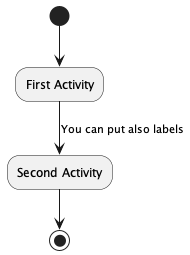
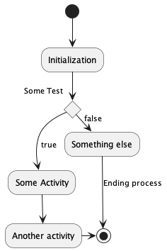
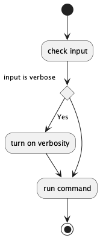
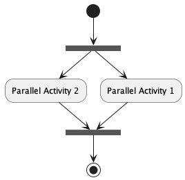
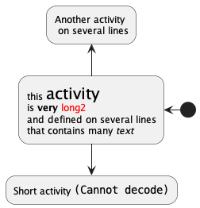
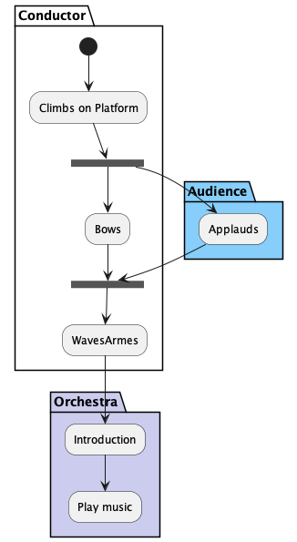
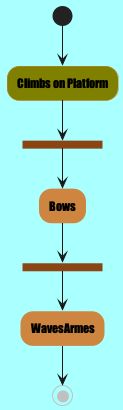
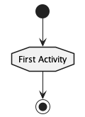

Activity Diagram
简单活动
使用 (*) 作为活动图的开始点和结束点。
使用 (*top) 强制开始点位于图示的顶端。
@startuml (*) --> "First Activity" "First Activity" --> (*) @enduml

箭头上的标签
使用 [] 定义标签。
@startuml (*) --> "First Activity" --> [You can put also labels] "Second Activity" --> (*) @enduml

改变箭头方向
-down->(default arrow)-right->or->-left->-up->
@startuml (*) -up-> "First Activity" -right-> "Second Activity" --> "Third Activity" -left-> (*) @enduml

分支
if/then/else
@startuml (*) --> "Initialization" if "Some Test" then -->[true] "Some Activity" --> "Another activity" -right-> (*) else ->[false] "Something else" -->[Ending process] (*) endif @enduml

有时需要重复定义同一个活动：
@startuml (*) --> "check input" If "input is verbose" then --> [Yes] "turn on verbosity" --> "run command" else --> "run command" Endif -->(*) @enduml

更多分支
@startuml (*) --> if "Some Test" then --> [true] "action 1" if "" then -> "action 3" as a3 else if "other test" then -left-> "action 5" else --> "action 6" endif endif else -> [false] "action 2" endif a3 --> if "last test" then --> "action 7" else -> "action 8" endif @enduml

同步
使用 === code === 显示同步条。
@startuml (*) --> ===B1=== --> "Parallel Activity 1" --> ===B2=== ===B1=== -> "Parallel Activity 2" --> ===B2=== --> (*) @enduml

长的活动描述
使用 \n 来定义跨越多行的描述。
可以用 as 关键字给活动起一个短的别名。
@startuml (*) -left-> "this <size:20>activity</size> is <b>very</b> <color:red>long2</color> and defined on several lines that contains many <i>text</i>" as A1 -up-> "Another activity\n on several lines" A1 --> "Short activity <img:sources/sourceforge.jpg>" @enduml

TODO 图片无法解析。
注释
plantuml 语法的注释是 ' 单引号。
note left ， note right ， note top or note bottom 给活动添加注释。
如果要给开始点添加注释，只需要吧注释的定义放在活动图最开始的地方即可。
也可以使用关键字 end note 定义多行注释。
@startuml '这是一个注释 (*) --> "Some Activity" note right: This activity has to be defined "Some Activity" --> (*) note left This note is on several lines end note @enduml

分区
partition 定义分区，还可以设置背景色。
@startuml partition Conductor { (*) --> "Climbs on Platform" --> === S1 === --> Bows } partition Audience #LightSkyBlue { === S1 === --> Applauds } partition Conductor { Bows --> === S2 === --> WavesArmes Applauds --> === S2 === } partition Orchestra #CCCCEE { WavesArmes --> Introduction --> "Play music" } @enduml

显示参数
skinparam 修改字体和颜色。
@startuml skinparam backgroundColor #AAFFFF skinparam activity { StartColor red BarColor SaddleBrown EndColor Silver BackgroundColor Peru BackgroundColor<< Begin >> Olive BorderColor Peru FontName Impact } (*) --> "Climbs on Platform" << Begin >> --> === S1 === --> Bows --> === S2 === --> WavesArmes --> (*) @enduml

这个字体是很粗的字体，所以设置字体也成功了。
八边形活动
使用 skinparam activityShape octagon 命令将活动的外形改为八边形。
@startuml 'Default is skinparam activityShape roundBox skinparam activityShape octagon (*) --> "First Activity" "First Activity" --> (*) @enduml
